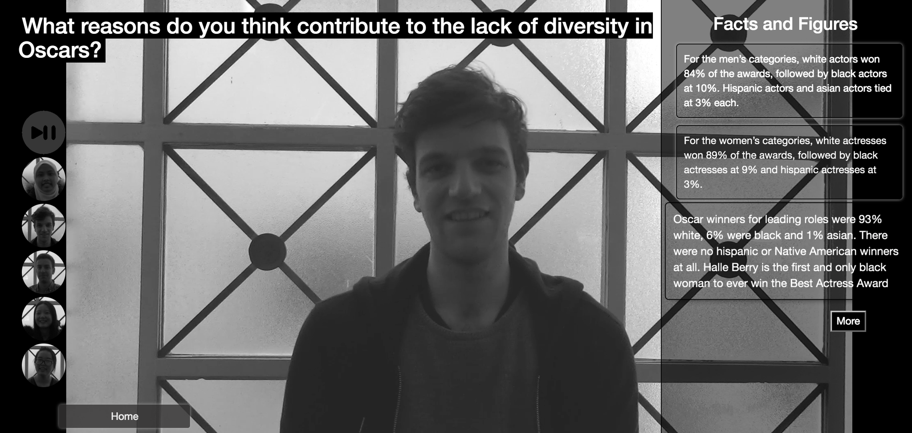
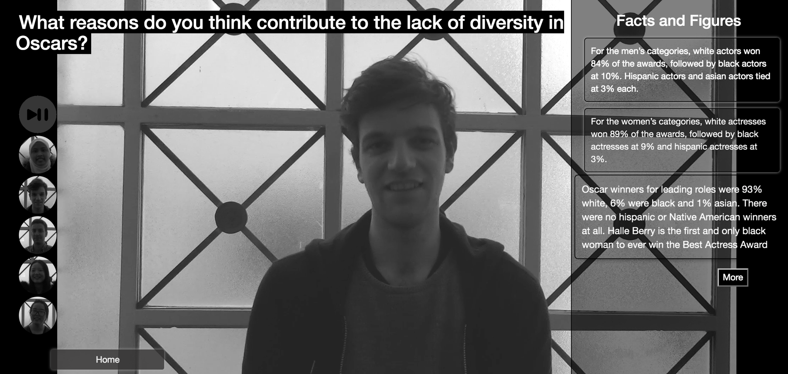
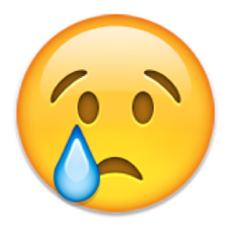

However, when this month I checked our group github and I found there were only a little videos of entertainment topics remianded. All the others had become like follwing:


We intended to make the page more intelligent. We tried to scrapy news website to get the trending topic then trasfer it into Json and loaded to our topic selection. But we did not finish that at that time. That's why to upgrade it becomes one of my destinations. Fortunatelly, there are some other problems with the page hosting on Git too. So the way to see it is to download as the zip in Git, local host the file and just choose the first three topic under entertainment.
Dowload the ZIP